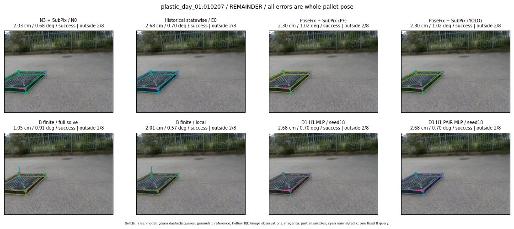

Whole-pallet pose errors; reference is a fixed geometric annotation, not certified physical GT.

Scores are uncalibrated logits. N0 retention is a numerical pose alias; it differs from H0 none or B fallback. B/I and profiles in baseline/B panels are original observations; L panels use new D1 observations. Only one deterministic supported B query is shown in a thumbnail; full support counts are below. Grey privacy rectangles edit the display copy only and are unrelated to O states; all observations were measured on original pixels. Thumbnails use JPEG quality85; detailed scientific panels are PNG.
| Method | Whole pose / cm, deg | Actual source | Selected ID | Score | Archived candidates | Eligible | N0 retained | H0 none | Fallback | Finite profiles |
|---|---|---|---|---|---|---|---|---|---|---|
| Raw YOLO + F | 1.99 cm / 0.35 deg / success | OTHER | None | N/A | N/A | N/A | False | N/A | None | N/A |
| N3 + SubPix / N0 | 2.03 cm / 0.68 deg / success | N0 | None | N/A | N/A | N/A | True | N/A | None | N/A |
| Historical statewise / E0 | 2.68 cm / 0.70 deg / success | E0_REGENERATED | None | N/A | N/A | N/A | False | N/A | False | N/A |
| PoseFix raw | 1.64 cm / 0.45 deg / success | OTHER | None | N/A | N/A | N/A | False | N/A | None | N/A |
| PoseFix + SubPix (PF) | 2.30 cm / 1.02 deg / success | OTHER | None | N/A | N/A | N/A | False | N/A | False | historical support records 9; finite audit N/A |
| PoseFix + SubPix (YOLO) | 2.30 cm / 1.02 deg / success | OTHER | None | N/A | N/A | N/A | False | N/A | False | historical support records 9; finite audit N/A |
| Historical L, seed18 | 2.03 cm / 0.68 deg / success | N0 | N0 | N/A | 54 | 54 | True | True | True | N/A |
| Historical B fixed bank | 2.68 cm / 0.70 deg / success | E0_REGENERATED | G13/ORIGINAL_WD/sample/0 | N/A | N/A | N/A | False | N/A | False | N/A |
| Historical B full | 1.94 cm / 0.87 deg / success | OTHER | NEW/B/ORIGINAL_WD/h2/G10/SWAPPED_WD/sample/2/PROPOSED_NATIVE_YAW_2 | N/A | N/A | N/A | False | N/A | False | N/A |
| Historical edge full | 22.02 cm / 85.84 deg / failure | OTHER | NEW/edge/SWAPPED_WD/h3/G10/ORIGINAL_WD/sample/0/PROPOSED_NATIVE_YAW_3 | N/A | N/A | N/A | False | N/A | False | N/A |
| Historical AB full | 1.67 cm / 0.88 deg / success | OTHER | NEW/AB/ORIGINAL_WD/h0/G13/ORIGINAL_WD/sample/0/PROPOSED_NATIVE_YAW_0 | N/A | N/A | N/A | False | N/A | False | N/A |
| B finite / fixed bank | 2.68 cm / 0.70 deg / success | E0_REGENERATED | G13/ORIGINAL_WD/sample/0 | N/A | N/A | N/A | False | N/A | False | 24/24 |
| B finite / full solve | 1.05 cm / 0.91 deg / success | OTHER | NEW_FINITE/B/ORIGINAL_WD/h0/G13/ORIGINAL_WD/sample/0/PROPOSED_NATIVE_YAW_0 | N/A | N/A | N/A | False | N/A | False | 24/24 |
| B finite / local | 2.01 cm / 0.57 deg / success | OTHER | NEW_FINITE/B/ORIGINAL_WD/h0/N0_LOCAL_SAME_PHYSICAL_POSE/ORIGINAL_WD | N/A | N/A | N/A | False | N/A | False | 24/24 |
| Edge finite / full solve | 2.68 cm / 0.70 deg / success | E0_REGENERATED | G13/ORIGINAL_WD/sample/0 | N/A | N/A | N/A | False | N/A | False | 24/24 |
| D0 H0 MLP / seed18 | 2.03 cm / 0.68 deg / success | N0 | N0 | 2.29923677444458 | 15 | 15 | True | True | True | N/A |
| D0 H0 MLP / seed19 | 2.03 cm / 0.68 deg / success | N0 | N0 | 2.659379720687866 | 15 | 15 | True | True | True | N/A |
| D0 H0 MLP / seed20 | 2.03 cm / 0.68 deg / success | N0 | N0 | 0.34376102685928345 | 15 | 15 | True | True | True | N/A |
| D0 H1 MLP / seed18 | 2.68 cm / 0.70 deg / success | E0_REGENERATED | E0_REGENERATED | -0.9327022433280945 | 15 | 15 | False | False | False | N/A |
| D0 H1 MLP / seed19 | 2.68 cm / 0.70 deg / success | E0_REGENERATED | E0_REGENERATED | -1.0161383152008057 | 15 | 15 | False | False | False | N/A |
| D0 H1 MLP / seed20 | 2.68 cm / 0.70 deg / success | E0_REGENERATED | E0_REGENERATED | -1.5703624486923218 | 15 | 15 | False | False | False | N/A |
| D1 H0 MLP / seed18 | 2.68 cm / 0.70 deg / success | E0_REGENERATED | E0_REGENERATED | 5.568173408508301 | 15 | 15 | False | False | False | N/A |
| D1 H0 MLP / seed19 | 2.03 cm / 0.68 deg / success | N0 | N0 | 5.637941360473633 | 15 | 15 | True | True | True | N/A |
| D1 H0 MLP / seed20 | 2.03 cm / 0.68 deg / success | N0 | N0 | 5.3582258224487305 | 15 | 15 | True | True | True | N/A |
| D1 H1 MLP / seed18 | 2.68 cm / 0.70 deg / success | E0_REGENERATED | E0_REGENERATED | 0.8995516300201416 | 15 | 15 | False | False | False | N/A |
| D1 H1 MLP / seed19 | 2.68 cm / 0.70 deg / success | E0_REGENERATED | E0_REGENERATED | 0.4620724320411682 | 15 | 15 | False | False | False | N/A |
| D1 H1 MLP / seed20 | 2.68 cm / 0.70 deg / success | E0_REGENERATED | E0_REGENERATED | 1.005341649055481 | 15 | 15 | False | False | False | N/A |
| D1 H1 ROLE AFFINE / seed18 | 2.68 cm / 0.70 deg / success | E0_REGENERATED | E0_REGENERATED | 0.8950319290161133 | 15 | 15 | False | False | False | N/A |
| D1 H1 ROLE AFFINE / seed19 | 2.03 cm / 0.68 deg / success | N0 | N0 | 0.39256900548934937 | 15 | 15 | True | False | False | N/A |
| D1 H1 ROLE AFFINE / seed20 | 2.03 cm / 0.68 deg / success | N0 | N0 | 0.8573944568634033 | 15 | 15 | True | False | False | N/A |
| D1 H1 PAIR MLP / seed18 | 2.68 cm / 0.70 deg / success | E0_REGENERATED | E0_REGENERATED | -0.24329671263694763 | 15 | 2 | False | False | False | N/A |
| D1 H1 PAIR MLP / seed19 | 2.68 cm / 0.70 deg / success | E0_REGENERATED | E0_REGENERATED | 0.3096884489059448 | 15 | 2 | False | False | False | N/A |
| D1 H1 PAIR MLP / seed20 | 2.68 cm / 0.70 deg / success | E0_REGENERATED | E0_REGENERATED | 0.975756049156189 | 15 | 2 | False | False | False | N/A |
| D1 H1 PAIR ROLE AFFINE / seed18 | 2.68 cm / 0.70 deg / success | E0_REGENERATED | E0_REGENERATED | 0.3836837112903595 | 15 | 2 | False | False | False | N/A |
| D1 H1 PAIR ROLE AFFINE / seed19 | 2.68 cm / 0.70 deg / success | E0_REGENERATED | E0_REGENERATED | 0.3596780598163605 | 15 | 2 | False | False | False | N/A |
| D1 H1 PAIR ROLE AFFINE / seed20 | 2.68 cm / 0.70 deg / success | E0_REGENERATED | E0_REGENERATED | 0.27204057574272156 | 15 | 2 | False | False | False | N/A |
| Regenerated common E0 | 2.68 cm / 0.70 deg / success | E0_REGENERATED | E0_REGENERATED | N/A | N/A | N/A | False | N/A | False | N/A |